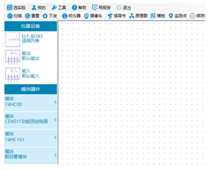
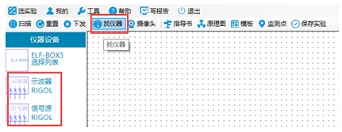
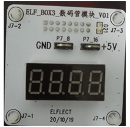
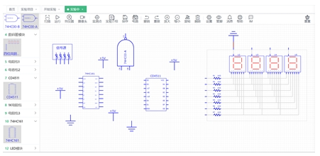
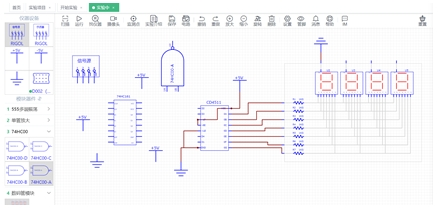
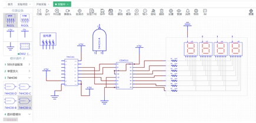
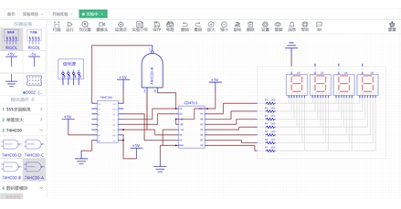
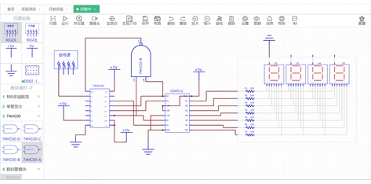
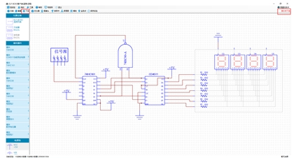
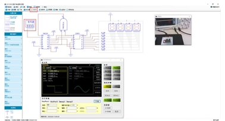

1.实验用的模块资源。点击左上角“扫描”，左边“模块器件”栏出现下拉菜单，此菜单显示出当前实验平台上配备好的模块资源，例如：74HC00、CD4511功能测试电路，74HC161等等。

图1 操作面板
2.连接测量仪器。点击上方“找仪器”，左边“仪器设备”栏出现RIGOL字样信号源、示波器，表示仪器成功连接。

图2 连接测量仪器
3.摆放元器件。从“模块器件”栏选择实验需要的模块“74HC00”、“CD4511功能测试电路”、“74HC161”、“数码管模块”，单击模块名称，下拉菜单显示了模块上可以使用的器件。从“电源地”栏选择+5V电源和地，拖拽到原理图绘制区域。同样，把信号源也拖拽进来。要注意每个元器件的摆放位置，方便连接电路。

图3 摆放元器件
4.连接数码管模块。由于四位数码管是共用7段端口，每个数码管有一个共阴极极，需要用哪个显示就把对应的共阴极接地，模块内部已经加了限流电阻，因此外部不用再加限流电阻。数码管实物图如下所示：

图4 数码管

图5 连接数码管模块
5.连接CD4511模块。CD4511是一个用于驱动共阴极 LED （数码管）显示器的 BCD 码—七段码译码器，特点：具有BCD转换、消隐和锁存控制、七段译码及驱动功能的CMOS电路能提供较大的拉电流。可直接驱动LED显示器。

图6 连接CD4511模块
6.连接74HC161模块。接着将4位二进制计数器74HC161接入电路。

图7 连接74HC161模块
7.连接74HC00模块。然后将与非门74HC00接入电路中。

图8 连接74HC00模块
8.连接信号源模块。信号源模块作为数据输入，最后接入到电路中。

图9 连接信号源模块
9.连接好电路，点击“下发”。
【注意】原理图画好后，右上角会出现红色字体提示“指令未下发”，点击左上角“下发”完成原理图到电路板的映射，创建好实物电路。

图10 点击“下发”
10.调试和观测。双击“信号源”图标，打开摄像头。通过缩放、移动原理图，调整布局。通过摄像头，观察到真实实验环境中用到的示波器。

图11 调试和观测
【注意】信号源输入选择方波，幅值设置为4Vpp，偏移设置为2V，如果输入波形不在74HC161输入逻辑电平范围内，那么有可能会出现逻辑混乱或者无法正确的驱动芯片内部电路。